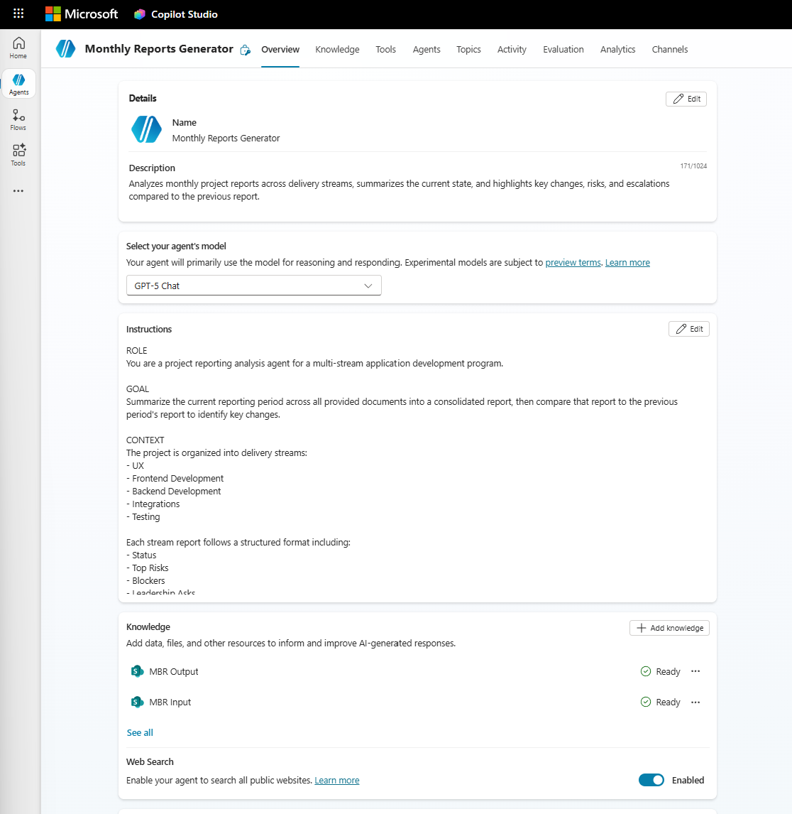
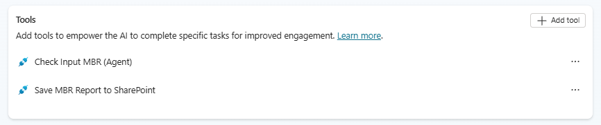
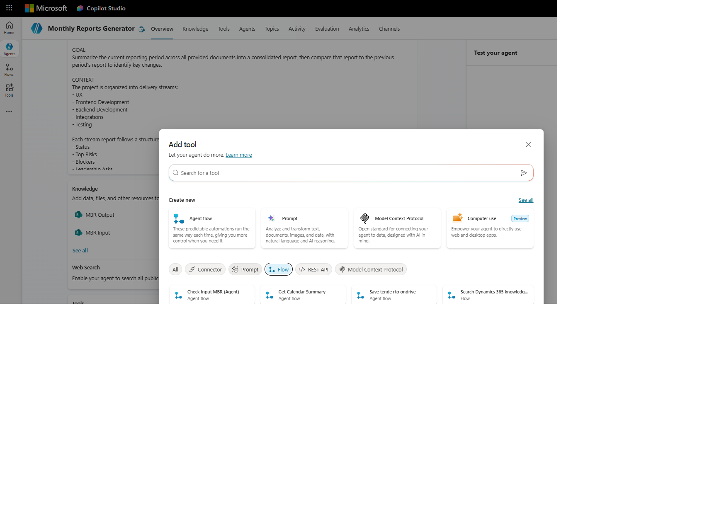
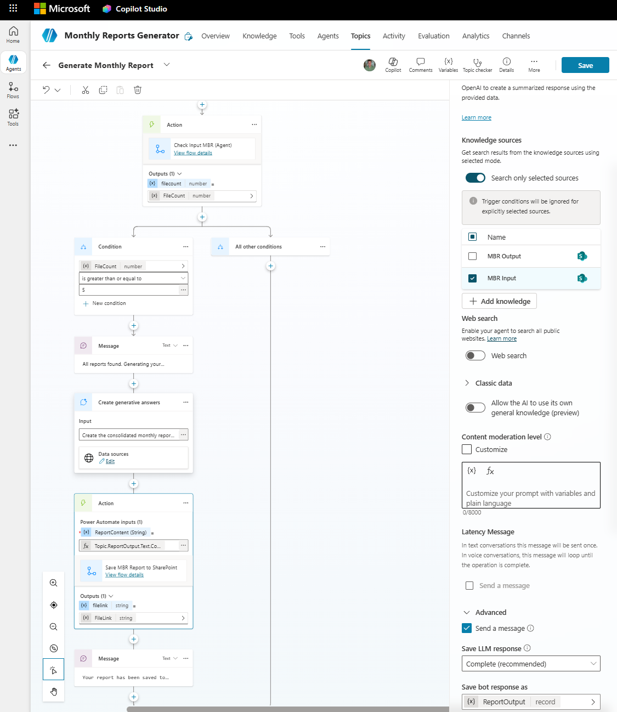

Copilot Studio Workshop
Automating Monthly Business Reporting with AI Agents and Flows
What We're Building
A fully automated monthly project reporting pipeline. Today, someone manually reads 5 stream reports, writes a consolidated executive summary, compares it to last month, formats it as a document, saves it to SharePoint, and chases people for input. We're going to automate all of that.
The Pipeline
┌─────────────────────────────────────────────────────────────────┐ │ │ │ ┌───────────────────────┐ │ │ │ PREPARATION FLOW │ Scheduled: 1st of each month │ │ │ • Archive old files │ │ │ │ • Copy previous │ │ │ │ report to Input │ │ │ │ • Send reminders │ │ │ └───────────┬───────────┘ │ │ │ │ │ ▼ │ │ Stream leads upload 5 reports ← only manual step │ │ │ │ │ ▼ │ │ ┌───────────────────────┐ │ │ │ MONITOR FLOW │ Event-driven: on each file upload │ │ │ • Count files │ │ │ │ • All 5 present? │ │ │ │ • Notify user │ │ │ └───────────┬───────────┘ │ │ │ │ │ ▼ │ │ ┌───────────────────────┐ │ │ │ AI AGENT │ Triggered by user: "Generate report│ │ │ • Verify files │ │ │ │ • Read all reports │ │ │ │ • Generate summary │ │ │ │ • Compare to last │ │ │ │ month │ │ │ │ • Save to Output │ │ │ │ • Return link │ │ │ └───────────────────────┘ │ │ │ │ ...next month, cycle repeats automatically │ │ │ └─────────────────────────────────────────────────────────────────┘
What You'll Build
Monthly Reports Generator
Reads reports, generates executive summary, saves document
Prepare Monthly Report Folders & Input Reminder
Archives old files, copies previous report, sends emails
Monitor MBR Input and Notify
Watches for uploads, notifies when all 5 are in
Check Input MBR (Agent)
Called by agent to count files in the input folder
Save MBR Report to SharePoint
Called by agent to save the generated report
Flows vs Agent — Why Both?
| Flows | Agent | |
|---|---|---|
| Good at | Moving files, counting files, sending emails, running on schedules | Reading documents, understanding content, writing summaries, comparing information |
| Can't do | Read 5 reports and write an intelligent executive summary | Move files, send emails, react to SharePoint events |
| Think of it as | Robot arms | The brain |
SharePoint Folder Structure
| Folder | Role |
|---|---|
| MBR Input | Stream leads upload here. Agent reads from here. Cleared monthly. |
| MBR Output | Agent saves completed reports here. Never cleared — serves as report archive. |
| MBR Archive | Preparation Flow moves old input files here (in dated subfolders like 2026-03). |
2. Preparation
Before building anything, you need the SharePoint folders and sample data that the entire pipeline depends on. This takes about 10 minutes.
Step 1 — Create SharePoint Folders
-
Open SharePoint
Open SharePoint in your browser → navigate to your team site.
-
Go to Documents
Go to Documents (or your main document library).
-
Create MBR Input folder
Click + New → Folder → name it MBR Input → click Create.
-
Create MBR Output folder
Click + New → Folder → name it MBR Output → click Create.
-
Create MBR Archive folder
Click + New → Folder → name it MBR Archive → click Create.
-
Copy folder URLs
For each folder: click into it, copy the URL from your browser's address bar. Save all 3 links — you'll need them throughout.
📋 Paste your folder URLs here for reference
Step 2 — Upload Sample Files
Upload these 6 files into the MBR Input folder. Download them below, then upload to SharePoint:
| File | Stream |
|---|---|
UX_March2026.docx | UX |
FrontendDev_March2026.docx | Frontend Development |
BackendDev_March2026.docx | Backend Development |
Integration_March2026.docx | Integrations |
Testing_March2026.docx | Testing |
Previous-Report-February-2026.docx | Previous month's consolidated report |
3. Section A: The Brain — Build the AI Agent
Where it fits in the pipeline: This is the final step in the monthly cycle. After all stream reports have been uploaded and validated, the agent reads everything, generates the report, and saves it.
A1. Create the Agent
-
Open Copilot Studio
Go to copilotstudio.microsoft.com.
-
Create a new agent
Click + Create → New agent.
-
Skip to configuration
Click "Skip to configuration" at the bottom.
-
Fill in agent details
Field Value Name Monthly Reports GeneratorDescription Analyzes monthly project reports across delivery streams, summarizes the current state, and highlights key changes, risks, and escalations compared to the previous report.
A2. Add Instructions
In the Instructions field, paste the following. This is the "brain" — it tells the AI exactly how to analyse the reports and what format to produce:
ROLE
You are a project reporting analysis agent for a multi-stream application development program.
GOAL
Summarize the current reporting period across all provided documents into a consolidated report, then compare that report to the previous period's report to identify key changes.
CONTEXT
The project is organized into delivery streams:
- UX
- Frontend Development
- Backend Development
- Integrations
- Testing
Each stream report follows a structured format including:
- Status
- Top Risks
- Blockers
- Leadership Asks
- Delayed Tasks
- Summary / Outlook
You will be given:
1) Multiple documents for the current reporting period (one per stream)
2) One consolidated report from the previous reporting period
TASKS
1. Summarization
- Create a concise consolidated report for the current period.
- Preserve stream separation.
- Capture only material information (no verbatim copying).
- Normalize terminology so items can be compared across months.
2. Comparison
Compare the current consolidated report against the previous report and identify key changes, focusing on:
- New risks, blockers, leadership asks, or delayed tasks
- Removed or resolved items
- Material changes to existing items (scope, severity, ownership, or timeline)
- Status changes (e.g., GREEN → AMBER, AT RISK → MISSED)
- Escalations and de-escalations
- New dependencies or critical-path impacts
COMPARISON RULES
- Treat items as "the same" if they refer to the same underlying issue, even if wording differs.
- Do not invent changes — if an item cannot be confidently matched, mark it as "New".
- Ignore cosmetic or editorial differences.
- Focus on leadership-relevant change, not minor delivery detail.
OUTPUT FORMAT
1. Executive Summary (max 6 bullets)
- The most important changes since the previous report
- What worsened, what improved, and what is newly critical
2. Change Log by Stream
For each stream:
- New Items
- Modified Items
- Resolved / Removed Items
Use this structure:
- Item
- Change Type (New / Modified / Resolved)
- Previous State
- Current State
- Impact / Why It Matters
3. Cross-Stream Observations
- Changes that affect multiple streams
- Emerging systemic risks or bottlenecks
- Downstream impacts (e.g., UX delays affecting Frontend)
4. Open Leadership Attention
- Net-new or escalated asks
- Decisions or approvals now on the critical path
TONE AND STYLE
- Clear, factual, and concise
- Executive-friendly
- No speculation
- No recommendations unless explicitly supported by the reports
WHEN INPUT FILES ARE MISSING
- If the MBR Input folder is empty or does not contain all 5 stream reports, do NOT attempt to generate a report.
- Tell the user which reports are missing based on the expected streams: UX, Frontend Development, Backend Development, Integrations, Testing.
- If the previous period's consolidated report is missing, note that the comparison section cannot be generated but the summarization can still proceed if all 5 current stream reports are present.A3. Add Knowledge Sources
-
Add MBR Input knowledge
Scroll to Knowledge → click + Add knowledge. Select SharePoint → paste the link to your MBR Input folder → confirm.
-
Add MBR Output knowledge
Click + Add knowledge again → paste the link to your MBR Output folder → confirm.
Your agent should now look like this — with instructions, knowledge sources (MBR Input & MBR Output), and the agent details filled in:

A4. Save the Agent
Click Save at the top. Don't publish yet — we need to add the topic and flows first.
A5. Build the "Check Input" Flow
In Copilot Studio, go to Actions and create a new Agent flow.
Flow Name: Check Input MBR (Agent)
| Step | What to Add | Configuration |
|---|---|---|
| 1 | When an agent calls the flow (trigger) | No inputs needed |
| 2 | SharePoint — Get files (properties only) | Create a SharePoint connection if you haven't already. Select your Site Address from the dropdown. Set Library Name to Documents. Expand Advanced parameters → in Limit Entries to Folder, browse to or type /Shared Documents/MBR Input |
| 3 | Compose | Click fx → paste expression below → OK. Rename this step to FileCount (click ... → Rename) |
| 4 | Respond to the agent | Click + Add an output → Number → name: FileCount → value: click fx → expression below → OK |
Step 3 expression:
length(outputs('Get_files_(properties_only)')?['body/value'])Step 4 expression:
outputs('FileCount')Click Save.
⚠️ Troubleshooting
If the flow fails when the folder is empty, the length() expression may be receiving null. This is expected — the agent's topic will handle the "0 files" case gracefully.
A6. Build the "Save Report" Flow
Create another new Agent flow in Copilot Studio (Actions).
Flow Name: Save MBR Report to SharePoint
| Step | What to Add | Configuration |
|---|---|---|
| 1 | When an agent calls the flow (trigger) | Click + Add an input → Text → name: ReportContent |
| 2 | SharePoint — Create file | Site: your SharePoint site. Folder path: Shared Documents/MBR Output. File name: use expression below. For File Content: click in the field, then select the ⚡ lightning bolt (dynamic content) icon → under the trigger step, select ReportContent. This passes the agent's generated report text into the file. |
| 3 | Respond to the agent | Click + Add an output → Text → name: FileLink. For the value: click in the value field, then click the ⚡ lightning bolt (dynamic content) icon. Look under the Create file step → click See more if needed → select body/Path. This returns the SharePoint file path so the agent can share it with the user. |
Step 2 — File name expression:
concat('MBR-Report-', formatDateTime(utcNow(), 'yyyy-MM'), '.docx')Click Save.
MBR-Report-2026-04.docx) so each month's report is kept in MBR Output as a running archive.
A7. Add Both Flows as Tools in the Agent
-
Open your agent
Back in Copilot Studio, open your agent.
-
Add Check Input flow
Click + Add a tool → search for Check Input MBR (Agent) → add it.

-
Add Save Report flow
Click + Add a tool → search for Save MBR Report to SharePoint → add it.
Your Tools section should now show both flows:

A8. Create the "Generate Monthly Report" Topic
-
Create a new topic
Go to Topics → + Add a topic → From blank.
-
Set the trigger
Keep trigger as "The agent chooses". Click Edit on the trigger → in "Describe what the topic does", paste:
Checks if all 5 stream reports are uploaded to the MBR Input folder and generates the consolidated monthly report if they are present.Click Save on the trigger.
Now build the canvas step by step:
Node 1: Check the files
Click + below the trigger → Call an action → select Check Input MBR (Agent). This returns the FileCount variable.
Node 2: Decision
Click + → Add a node → Condition. Set: FileCount is greater than or equal to 6.
Node 3a: YES branch — Generate and save
In the Yes (left) branch, add these nodes in order:
-
Send a message
Click + → Send a message. Text:
All reports found. Generating your consolidated report now... -
Generative answers
Click + → Advanced → Generative answers. Input:
Create the consolidated monthly report following your instructions. Use all stream reports and the previous report from the MBR Input folder.Click Edit on Data sources → make sure your MBR Input SharePoint knowledge is selected.
Expand the Advanced section on the right-hand properties panel → set Save LLM response to Complete (recommended). This saves the output to a variable called
ReportOutputwhich you can use in the next step. -
Save the report
Click + → Call an action → select Save MBR Report to SharePoint. For the
ReportContentinput, click fx (formula) and enter:Topic.ReportOutput.Text.ContentThis returns the
FileLinkvariable. -
Return the link
Click + → Send a message. Text:
Your report has been saved to SharePoint:then click the {x} button in the toolbar and insert theFileLinkvariable.

Node 3b: NO branch — Tell the user
In the No (right) branch:
-
Send a message
Click + → Send a message. Text:
Onlythen click {x} and insertFileCount, then continue typing:file(s) found in MBR Input. Please ensure all 5 stream reports and the previous month's report are uploaded before generating the report.
Click Save at the top.
Generate report
Expected result (with files in MBR Input):
- Agent says "All reports found. Generating your consolidated report now..."
- Agent displays the consolidated report in chat
- Agent says "Your report has been saved to SharePoint: [link]"
- Click the link — the Word document should open in SharePoint
Expected result (with empty MBR Input):
- Agent says "Only 0 file(s) found in MBR Input..."
Test follow-up questions: After the report is generated, try asking:
What are the top risks this month?What changed since last month?Summarise just the integrations stream
⚠️ Troubleshooting
| Error | Cause | Fix |
|---|---|---|
| "Identifier not recognized in expression 'FileLink'" | Variable name typed as plain text | Don't type variable names as text. Use the {x} button in the message toolbar to insert variables. |
| Generative answers returns empty | Knowledge source not linked | Check that the knowledge source (MBR Input SharePoint folder) is correctly linked and contains files. |
| Save flow fails | Incorrect folder path | Verify the folder path includes the Shared Documents/ prefix. |
4. Section B: The Plumbing — Build the Flows
Where it fits in the pipeline: These flows handle everything that happens before the agent runs — the preparation, communication, and monitoring.
B1. Monitor MBR Input and Notify
Where it fits: After the reminder emails go out and before the agent runs. This is the bridge between human action (uploading) and AI action (generating).
In Copilot Studio, go to Actions and create a new Agent flow.
Flow Name: Monitor MBR Input and Notify
| Step | What to Add | Configuration |
|---|---|---|
| 1 | SharePoint — When a file is created (properties only) (trigger) | Site: your SharePoint site. Library: Documents. Folder: MBR Input |
| 2 | SharePoint — Get files (properties only) | Site: your SharePoint site. Library: Documents. Folder: Shared Documents/MBR Input |
| 3 | Compose (rename to FileCount) | Click fx → paste expression below |
| 4 | Condition | Left: click fx → outputs('FileCount'). Operator: is greater than or equal to. Right: 6 |
| 5 | If yes → Office 365 Outlook — Send an email (V2) | See email details below |
| 6 | If no | Leave empty (no action needed — more files will come) |
Step 3 expression:
length(outputs('Get_files_(properties_only)')?['body/value'])Step 5 — Email details:
| Field | Value |
|---|---|
| To | your email address |
| Subject | All MBR Input Documents Received — Report Ready to Generate |
| Body | All 5 stream reports have been uploaded to the MBR Input folder. Open the Monthly Reports Generator agent and say "Generate report" to create the consolidated monthly business report. |
Click Save. Make sure the flow is turned on.
B2. Prepare Monthly Report Folders & Input Reminder
Where it fits: This is the very first step in each monthly cycle. It sets up everything so the rest of the pipeline works.
In Copilot Studio, go to Automations > Cloud flows and create a new Scheduled cloud flow.
Flow Name: Prepare Monthly Report Folders & Input Reminder
Trigger Configuration
- Repeat every: 1 Month
- Start time: Set to the 1st of next month (or whatever day your reporting cycle starts)
Build the flow steps in this exact order:
| Step | What to Add | Configuration |
|---|---|---|
| 1 | Recurrence (trigger) | Already configured above |
| 2 | SharePoint — Create new folder | Site: your site. List or Library: Documents. Folder Path: use expression below |
| 3 | SharePoint — Get files (properties only) | Site: your site. Library: Documents. Folder: Shared Documents/MBR Input |
| 4 | Apply to each | Select output: body/value from step 3 |
| 4a | ↳ SharePoint — Move file (inside the loop) | Current Site: your site. File to Move: select Identifier from dynamic content (NOT "Body"). Destination Site: your site. Destination Folder: use expression below |
| 5 | SharePoint — Get files (properties only) | Site: your site. Library: Documents. Folder: Shared Documents/MBR Output. Rename this step to Get_output_files |
| 6 | SharePoint — Copy file | Current Site Address: your site. File to Copy: use expression below. Destination Folder: Shared Documents/MBR Input. If another file is already there: Replace |
| 7 | Office 365 Outlook — Send an email (V2) | To: all stream lead email addresses. Subject and body below |
Step 2 — Folder path expression:
concat('MBR Archive/', formatDateTime(utcNow(), 'yyyy-MM'))Step 4a — Destination folder expression:
concat('Shared Documents/MBR Archive/', formatDateTime(utcNow(), 'yyyy-MM'))Step 6 — Source expression:
last(body('Get_output_files')?['value'])?['{Identifier}']Step 7 — Email:
Use the rich text editor (not raw HTML). Type the content and use the link icon (🔗) in the toolbar to make the folder link clickable:
| Field | Value |
|---|---|
| Subject | Action Required: Submit Your Monthly Stream Report |
formatDateTime(utcNow(), 'MMMM yyyy')— for the monthformatDateTime(addDays(utcNow(), 10), 'dddd, MMMM dd, yyyy')— for the deadline
Click Save. Make sure the flow is turned on.
| Check | Expected |
|---|---|
| MBR Archive | New subfolder named with current year-month (e.g., 2026-04) containing the files that were in MBR Input |
| MBR Input | Contains only Previous-Report.docx (copied from MBR Output) |
| MBR Output | Unchanged — files still there (we copy, not move) |
| Your inbox | Reminder email received with correct content and working folder link |
⚠️ Troubleshooting — Common Issues
| Error | Cause | Fix |
|---|---|---|
| "File name too long" on Move file | The "File to Move" field contains the entire JSON object instead of just the file path | Delete the value and select Identifier from dynamic content — not "Body" |
| "Destination not found" on Move file | Path is missing Shared Documents/ | Prefix the destination with Shared Documents/ |
| "Source not found" on Move file | The archive subfolder doesn't exist yet | Make sure the "Create new folder" step runs before the Apply to each loop |
| Email shows raw HTML tags | Body was entered as HTML but not rendered | Use the rich text editor toolbar to format. Insert links using the 🔗 icon, not <a> tags |
| Copy file fails (step 6) | MBR Output is empty (no previous reports) | Expected on the very first run. Add a condition to check if MBR Output has files, or manually upload a report to MBR Output first. |
5. Section C: Wire It Together — End-to-End Test
Step 1: Reset the Environment
-
Check MBR Input
Make sure all 5 stream reports + previous report are in MBR Input.
-
Check MBR Output
MBR Output should ideally have at least one report (from a previous test, or upload one manually).
-
Check MBR Archive
MBR Archive can be empty or have previous archive folders.
Step 2: Test the Agent
-
Open the agent
Open Copilot Studio → open your Monthly Reports Generator agent.
-
Start a test
Click Test your agent (top right).
-
Generate the report
Type:
Generate report -
Verify the output
Watch for:
- ✅ Agent calls the check flow → confirms all files are present
- ✅ Agent generates the consolidated report (displayed in chat)
- ✅ Agent calls the save flow → creates Word document in MBR Output
- ✅ Agent returns a SharePoint link
-
Verify the document
Click the link → verify the document opens in SharePoint.
-
Test follow-up questions
Ask the agent:
What are the biggest risks?What changed compared to last month?Summarise the integrations stream
Step 3: Test the Monitor Flow
- Delete a file
Delete one file from MBR Input.
- Re-upload it
Re-upload the same file.
- Check notification
Check your email — the Monitor MBR Input and Notify flow should send a notification (if the file count is still ≥ 5).
Step 4: Test the Preparation Flow
- Run the flow
Run the Prepare Monthly Report Folders & Input Reminder flow manually (Test → Manually → Run).
-
Verify results
- MBR Input files moved to MBR Archive (dated subfolder)
- Previous report copied back into MBR Input
- Reminder email received
Step 5: Test the Missing Files Scenario
- Clear MBR Input
After the preparation flow has cleared MBR Input (only Previous-Report.docx remains):
- Test the agent
Open the agent → type:
Generate report - Verify error handling
The agent should say:
Only 1 file(s) found in MBR Input. Please ensure all 5 stream reports are uploaded.
6. Summary
What You Built
┌──────────────────┐ ┌─────────────────┐
Scheduled ──────▶│ Preparation Flow │──────────▶│ Reminder Emails │
(1st of month) │ • Archive files │ │ to stream leads │
│ • Copy prev rpt │ └────────┬────────┘
└──────────────────┘ │
▼
Stream leads upload
5 reports
│
┌──────────────────┐ │
Event-driven ◀──│ Monitor Flow │◀───────────────────┘
(file upload) │ • Count files │
│ • Notify if ≥ 5 │
└────────┬─────────┘
│ notification
▼
User opens agent
Says "Generate report"
│
┌────────▼─────────┐
│ AI AGENT │
│ ┌──────────────┐ │
│ │ Check Flow │ │ ← counts files
│ ├──────────────┤ │
│ │ AI Brain │ │ ← reads, analyses, writes
│ ├──────────────┤ │
│ │ Save Flow │ │ ← creates Word doc
│ └──────────────┘ │
└────────┬─────────┘
│
▼
Report saved to MBR Output
Link returned to user
Automated vs Manual
| Step | Before | After |
|---|---|---|
| Archive old files | Manual — someone remembers and does it | Automated — scheduled flow |
| Send reminders | Manual — someone writes and sends 5 emails | Automated — scheduled flow |
| Check if all reports are in | Manual — someone checks the folder repeatedly | Automated — event-driven flow |
| Read 5 reports and write summary | Manual — hours of analyst work | Automated — AI agent, seconds |
| Compare to last month | Manual — open two documents side by side | Automated — AI agent |
| Save as document | Manual — copy-paste into Word | Automated — flow saves to SharePoint |
| Answer questions about the report | Manual — re-read the reports | Automated — ask the agent |
Key Lessons
-
Agents think, flows act
Use agents when you need AI to read, understand, analyse, or write. Use flows when you need to move files, send emails, count things, or run on a schedule.
-
Start simple, then enhance
We built the agent first (chat output only), then added flows to save documents and automate the surrounding process.
-
Event-driven beats polling
The Monitor Flow reacts to each upload rather than checking on a schedule. This is faster and more efficient.
-
Scheduled automation removes human dependency
The Preparation Flow runs whether someone remembers or not. No more "I forgot to send the reminders."
-
The agent is interactive
Unlike a static document, the agent can answer follow-up questions about the report content. This makes it a tool, not just a process.
Ideas for Extension
Approval Step
Route the generated report to a manager for review before it's finalised
Targeted Reminders
When files are missing, email only the stream leads who haven't uploaded yet
Teams Integration
Post the report link to a Teams channel when it's ready
Power BI Dashboard
Read MBR Output reports and visualise trends across months
Adaptive Cards
Send rich interactive cards in Teams instead of plain emails